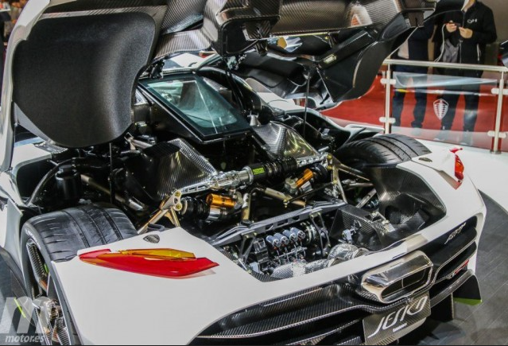

Componentes del Auto Koenigsegg Jesko Absolut, el Auto Mas Rapido del Mundo.
1.capó trasero extendido
2.ruedas traseras cubiertas
3.una altura de conducción más baja y un conducto de aire cerrado en el capó delantero
4.El motor es un V8 biturbo de 1280 CV (1600 CV con E85) con el cigüeñal V8 más ligero del mundo
5.También incluye alerones divisores delanteros más aerodinámicos,
rejillas de ventilación delanteras rediseñadas y tapacubos aerodinámicos extraíbles.

Volver a la pagina principal: